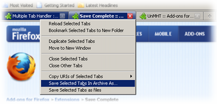
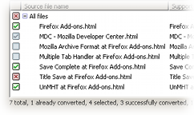
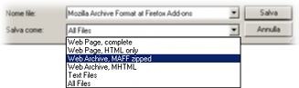

Web archives are better than the normal way of saving pages. When you save a complete page as HTML, a folder full of small files is also created. The result may easily become unreadable when moved to other computers or burned onto a CD-ROM. Saving each page in a single file, instead, makes sure that they will remain readable in the future, and allows for faster backups and easier file management.
Using the MAFF web archive format, you can save multimedia files together with the page, for example a blog post that includes some videos. Combined with the built-in browser support for Vorbis, Theora, and WebM multimedia files in HTML5, MAFF becomes ideal for packaging video, audio, and related resources in a portable file.
This feature allows your browser to save every page with greater accuracy, including all styles and images. When you open a page that you saved with the Mozilla Archive Format add-on installed, you see an exact snapshot of what was displayed when you initiated the save command. This is also true for complete pages saved outside of a web archive.
You can save multiple tabs in a single MAFF archive. Moreover, if you use the Multiple Tab Handler add-on, you can easily select which tabs to save.
Every web archive contains the original address from which the page was saved, as well as the date of the save operation. With Mozilla Archive Format, you can find again and reopen the original website, not only for new archives but even for pages previously saved using Internet Explorer.
The Saved Pages Conversion Wizard can guide you through the conversion of your previously saved web pages to a different file format. You can convert old pages to MAFF, if you want to save disk space or prevent problems when burning a CD-ROM. You can also convert MAFF back to other formats, in case you need to interoperate with other applications. Thanks to this feature and the fact that MAFF is an open format, you will never find yourself in the situation of being unable to read the web archives you created.
You can recommend Mozilla Archive Format to your friends because it is easy to use for everyone. The underlying functionality is still very powerful, and the add-on will generally do the right thing automatically, like preserving the original date and time of previously saved pages. And for the advanced user, many behavioral details can be tweaked from the about:config page as explained in the documentation.
Depending on your habits, you can use the dedicated Save Page In Archive As menu item, or select a web archive file type from the standard Save Page As dialog box. If you don't use some menu items or prefer to have more commands readily available from the context menu, you can optimize the user interface to suit your needs.
Saving pages as MAFF lets you minimize disk usage and access time on slow media, since MAFF is based on the universal, compressed ZIP file format. A page saved as MAFF is smaller than the same page saved as individual files, and much smaller than MHTML, because the latter is encoded in a way that makes it usually larger than the original page.
Opening MAFF files is nearly instantaneous thanks to the native support for ZIP files of Firefox and SeaMonkey. For creating and opening MHTML files, Mozilla Archive Format uses the fastest JavaScript routines available for MIME encoding and decoding, that have been developed specifically for the add-on.
Web archives created with Firefox or SeaMonkey in the MHTML format are 100% compatible with Internet Explorer and other browsers. MAFF archives are also created in such a way that they are fully compatible with any modern ZIP extraction utility.
Mozilla Archive Format is designed to integrate not only with the browser, but with many compatible extensions as well. For example, you can use UnMHT if you want advanced options when saving MHTML files, or a download organizer to select your download folders and file names automatically.
On Windows, Mozilla Archive Format can configure your operating system so that web archives are opened in Firefox or SeaMonkey when you click their icon. For Linux, the same file type association can be created with manual steps.
Mozilla Archive Format is and will always be free for everyone to use, modify, and adapt to their needs. MAFF is an open file format whose technical specification is maintained by the MAF project. The latest version of the add-on is distributed under a choice of several Open Source and Free Software licenses: the Mozilla Public License 1.1, the GNU General Public License 2.0, the GNU Lesser General Public License 2.1, or any later version of these licenses.
Mozilla Archive Format is used daily by over 50,000 people. In case something doesn't work as you expected, you can ask for support.